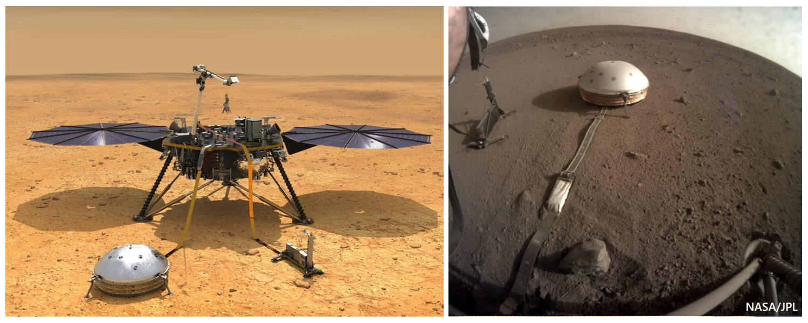

Etape 1 : Contexte scientifique
La mission Insight de la NASA a atterrit sur Mars en novembre 2018, et a fonctionné de février 2019 jusqu’à décembre 2022.

Ce TP se base sur l’article de P. Lognonné intitulé « SEIS: Insight’s Seismic Experiment for Internal Structure of Mars », publié dans Space Science Reviews en 2019.
Source : https://doi.org/10.1007/s11214-018-0574-6
En voici quelques extraits :
| Extrait 1 |
|---|
| "The InSight mission will deploy the first complete geophysical observatory on Mars following in the footsteps of the Apollo Lunar Surface Experiments Package (ALSEP) deployed on the Moon during the Apollo program. |
| It will thus provide the first ground truth constraints on interior structure of the planet. |
| The InSight spacecraft was launched on May 5, 2018 and landed on Mars on November 26, 2018 in Elysium Planitia. |
| The three primary scientific investigations are the Seismic Experiment for Interior Structure (SEIS), the Heat Flow and Physical Properties Package (HP3), a self-hammering mole that deploys a tether with temperature sensors to a depth of 3–5 m and the Rotation and Interior Structure Experiment (RISE), an X-band precision tracking experiment which will follow the motion of the lander over a Martian year to determine the precession and nutation of Mars." |
| Extrait 2 |
|---|
| "The SEIS instrument has 4 main components: |
| – The Sensor Assembly (SA). It accommodates two independent, 3 axes seismometers: a Very Broad Band (VBB) oblique seismometer and a miniature Short Period (SP) seismometer. […] |
| – The EBox (Electronic Box), a set of electronic cards located inside the lander’s thermal enclosure. |
| – The tether that makes the electrical link between the SA and the EBox. |
| – The WTS (Wind and Thermal Shield) that is deployed after the SA and over it. It gives an extra protection against winds and temperature variations." |
| Extrait 3 |
|---|
| "Funding of all subsystems has been made without fund transfer and has been therefore supported by the French (CNES) […]" |
A partir de ces extraits, et en faisant appel à vos connaissances sur les articles scientifiques et les missions d'exploration spatiale, répondez aux questions suivantes :
-
Question 1 : De quelle mission de la NASA l’instrument SEIS fait-il partie ?
-
Question 2: Quel est l’objectif scientifique de cette mission ?
-
Question 3 : De quel type de plateforme s’agit-il ?
-
Question 4 : Quels autres instruments contient la plateforme ? Précisez pour chacun s’il s’agit de remote-sensing ou de direct-sensing, s’il s’agit d’un instrument actif ou passif.
-
Question 5 : Quels capteurs contient SEIS ?
-
Question 6 : Quel institut est responsable du développement de l’instrument ? Quel est probablement le rôle de P. Lognonné vis-à-vis de SEIS ?